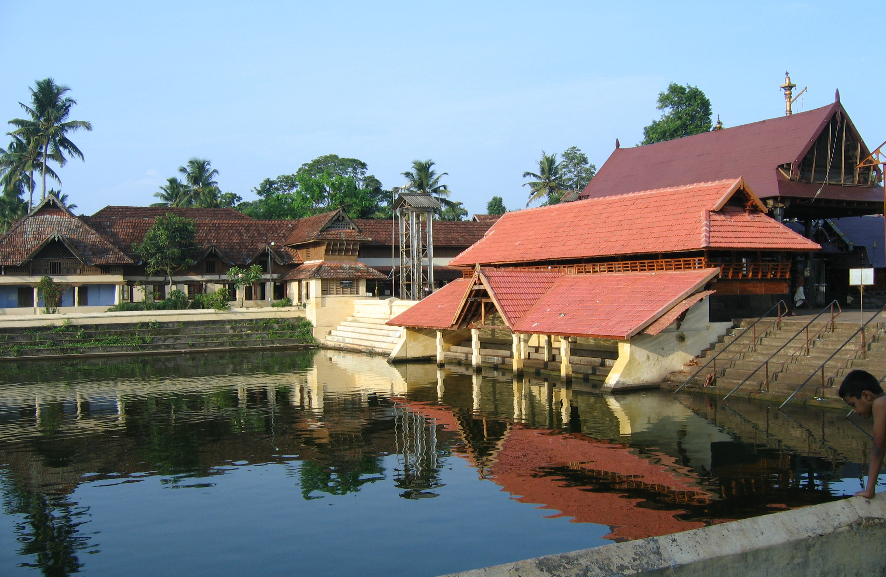

Krishnapuram Palace
The Krishnapuram Palace is a palace and museum located in Kayamkulam near Alappuzha in Alappuzha district, Kerala in southwestern India. It was built in the 18th century by Anizham Thirunal Marthanda Varma, the Travancore kingdom.
Punnapra
The College of Engineering and Management Punnapra is an educational institution established in 2008 under the Co-operative Academy of Professional Education.

Ambalappuzha Temple
Ambalappuzha is a small town in the Alappuzha district of Kerala state, India. It is located 14 km south of Alappuzha which is the district headquarters.